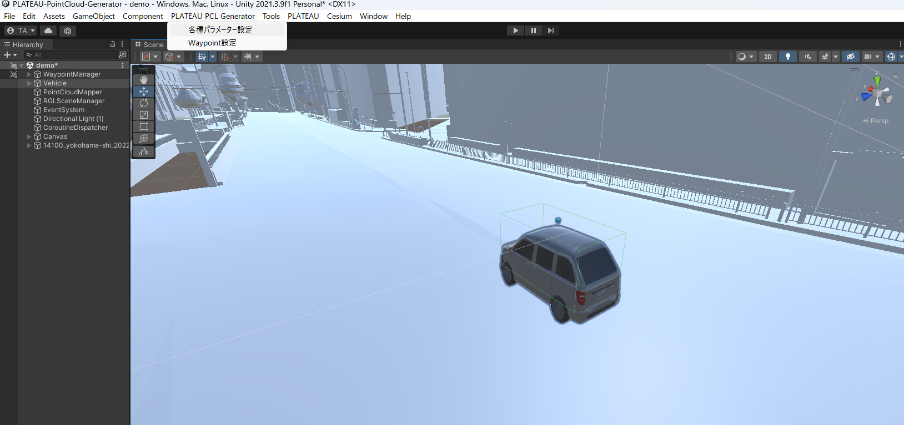

ルート設定
1. PLATEAU PCL Generatorメニューを開く
- メニューバーの
PLATEAU PCL Generatorをクリックして、Waypoint設定をクリックします。 
2. ルート名を設定
- ルート名を入力します

3. パス作成開始
- パス作成開始ボタンをクリックします。
- シーン上で
Pキーを押すことで、Waypointオブジェクトを配置できます。
4. パス作成終了、パス設定
- パス作成を終了ボタンをクリックすると、走行ルートが表示されます。
- パス設定をクリックすると、車両の走行ルートを設定します。

5. Waypoint編集
- Waypointオブジェクトの位置を調整することで、Waypointの微調整を行うことができます。